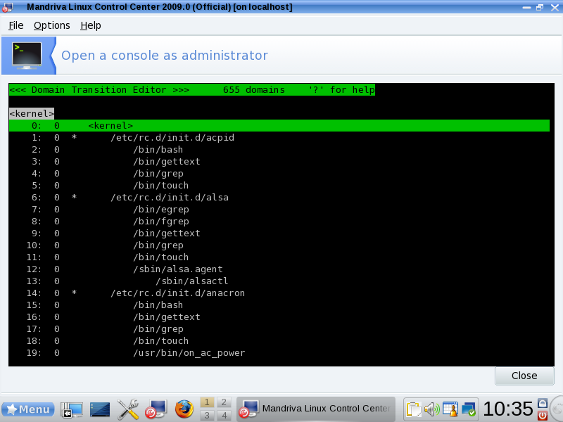
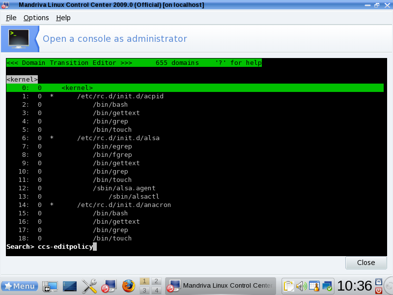
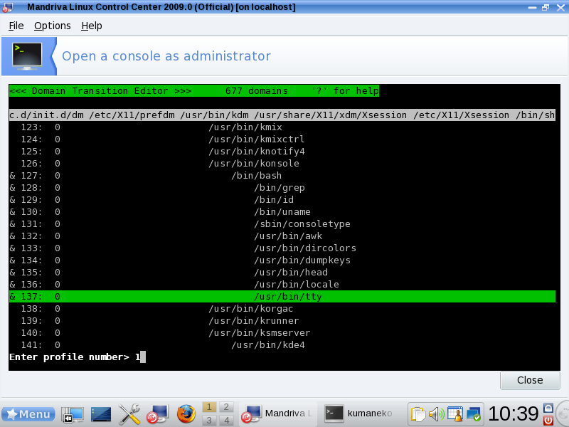
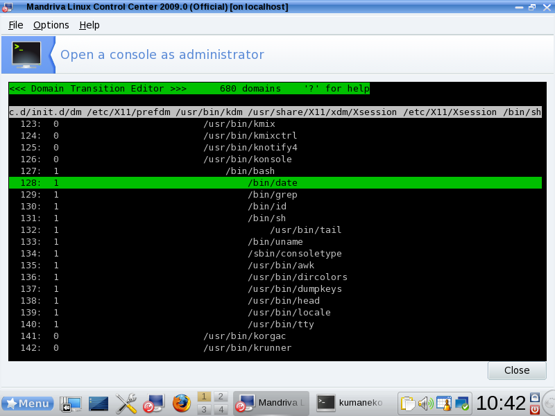
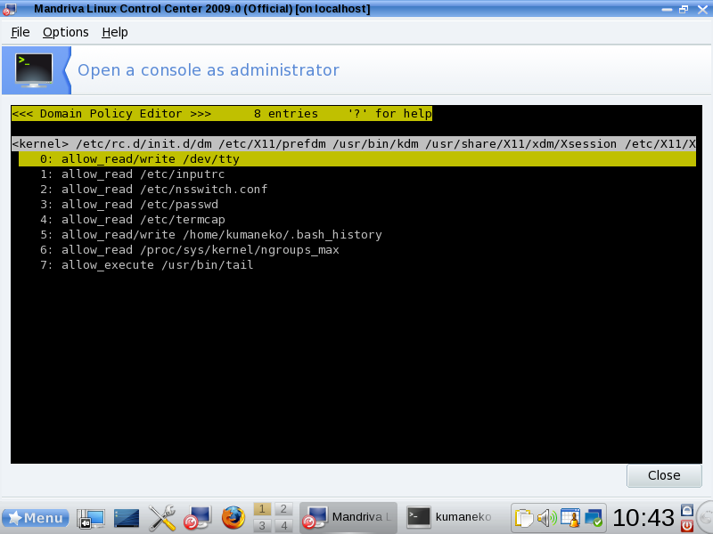
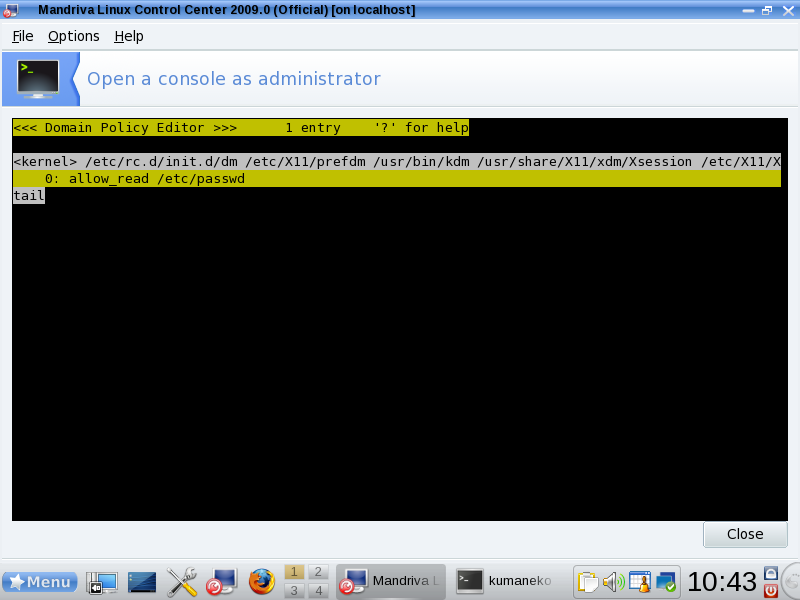
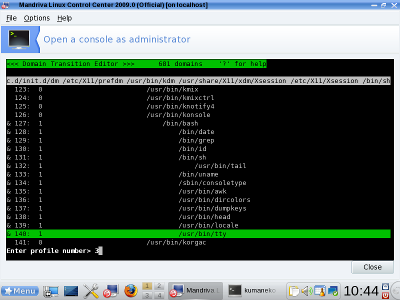
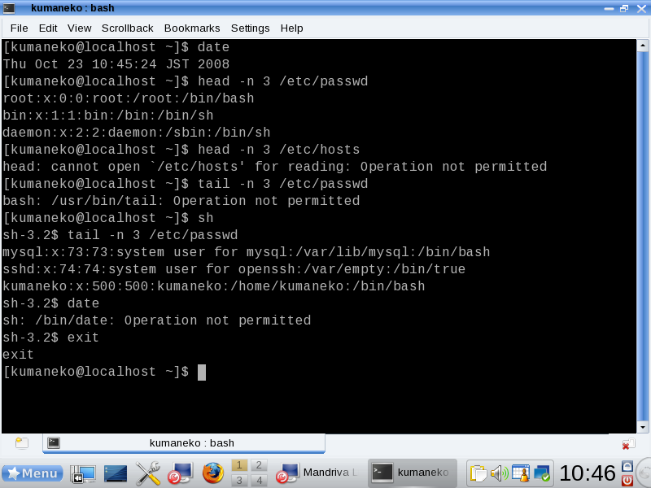

This page explains you how to introduce TOMOYO Linux 1.6.4 on Mandriva 2009.0 systems. By operating along with this page, you will be able to experience the fundamental functionalities of TOMOYO Linux and configure and operate TOMOYO Linux.
You need to install TOMOYO Linux tools. The TOMOYO Linux tools include programs for managing TOMOYO Linux's policy.
Install ccs-tools rpm package from administrator's console.
To start an administrator's console, select "Menu" => "Tools" => "System Tools" => "Configure Your Computer" menu.
Then, select "System" => "Open a console as administrator" menu.
Run urpmi command to install ccs-tools package.
# urpmi ccs-tools
A script is included in the tools package that performs configurations in this chapter. Run the script as follows from console or terminal.
# /usr/lib/ccs/init_policy.sh --file-only-profile
The execution of init_policy.sh may take long time (more than 10 minutes in some environment).
You have finished all preparations. Now, reboot the system.
# reboot
The default directory for storing TOMOYO Linux's configuration is /etc/ccs/ .
Since TOMOYO Linux has much functionality, you can selectively enable/disable them using "profiles". All profiles are stored in a single file /etc/ccs/profile.conf and you can switch profiles assigned to domains.
Since this page explains only MAC for files, /etc/ccs/profile.conf will contain the following entries.
0-COMMENT=-----Disabled Mode----- 0-MAC_FOR_FILE=disabled 0-TOMOYO_VERBOSE=disabled 1-COMMENT=-----Learning Mode----- 1-MAC_FOR_FILE=learning 1-TOMOYO_VERBOSE=disabled 2-COMMENT=-----Permissive Mode----- 2-MAC_FOF_FILE=permissive 2-TOMOYO_VERBOSE=enabled 3-COMMENT=-----Enforcing Mode----- 3-MAC_FOR_FILE=enforcing 3-TOMOYO_VERBOSE=enabled
The syntax of an entry of /etc/ccs/profile.conf is shown below.
$profile_number-$topic_name=$control_mode
The leading integer ($profile_number) is the name of profile, the followed word before = ($topic_name) is the name of functionalities and the trailing word after = ($control_mode) is the control mode.
The $topic_name = COMMENT is just for administrators.
The $topic_name = MAC_FOR_FILE means "MAC for file accesses".
The $topic_name = TOMOYO_VERBOSE means whether policy violation messages are printed to console or not, and prints if $control_mode = enabled and doesn't print if $control_mode = disabled.
The above example has 4 profiles (from 0 to 3), and the purpose of them are shown below.
| profile 0 | Don't apply MAC for file accesses. Don't print policy violation messages on console. |
|---|---|
| profile 1 | Apply MAC for file accesses using learning mode. Don't print policy violation messages on console. |
| profile 2 | Apply MAC for file accesses using permissive mode. Print policy violation messages on console. |
| profile 3 | Apply MAC for file accesses using enforcing mode. Print policy violation messages on console. |
The basic procedure is, generate policy using learning mode (which is defined in profile 1), confirm policy using permissive mode (which is defined in profile 2), and enforce policy using enforcing mode (which is defined in profile 3).
Programs that can update policies are listed in /etc/ccs/manager.conf . The following programs are listed.
/usr/lib/ccs/loadpolicy /usr/lib/ccs/editpolicy /usr/lib/ccs/setlevel /usr/lib/ccs/setprofile /usr/lib/ccs/ld-watch /usr/lib/ccs/ccs-queryd
/etc/ccs/exception_policy.conf contains the following 12 types of exceptions.
TOMOYO Linux has two types of logs, "access granted logs" (access requests that didn't violate domain policy) and "access rejected logs" (access requests that violated domain policy). By installing ccs-tools package, the system is automatically configured to save "access rejected logs".
Start TOMOYO Linux's policy editor from administrator's console.
# /usr/sbin/ccs-editpolicy
You will see a screen shown below. Note that the number of domains may differ depending on environment.

For example, let's search for this editor from this screen. Press "f" and enter "ccs-editpolicy" and press "Enter" key.

You can scroll screen using arrow keys. You will find a line containing "/usr/sbin/ccs-editpolicy".
To do some operations, open a Konsole window.
To start a Konsole window, select "Menu" => "Tools" => "Konsole" menu.
Switch to the policy editor's window, and let's search for the Konsole's window. Press "r" to refresh. Press "f" and enter "konsole" and press "Enter" key. You will find a line containing "/usr/bin/konsole".
Move cursor to a line below the line containing "/usr/bin/konsole" by pressing down arrow key and press "Space" key. You will find a "&" mark appeared at the beginning of the line.
Repeat this operation against all lines below the line containing "/bin/bash". In this example, repeat from line 127 to 137.
Press "s" key and enter "1" and press "Enter" key. The "1" means profile number 1, which is defined for "learning mode" at Initializing policy configuration.

Now, the Konsole window is in "learning mode".
Switch to the Konsole's window, and let's do some operations.
Switch to the policy editor's window, and let's search for the Konsole's window. Press "r" to refresh. Press "f" and enter "konsole" and press "Enter" key. You will find lines containing "/bin/date" and "/usr/bin/head" and "/bin/sh" and "/usr/bin/tail" were appended.

Move the cursor to the line containing "/usr/bin/head" (in this screen, line number 138) and press "Enter" key. You will see a line containing "allow_read /etc/passwd". This entry was automatically appended by TOMOYO Linux's learning mode.
Press "Enter" key to return. Let's see what entries are automatically appended for the line "/bin/sh" and "/usr/bin/tail".


As you might have already guessed, "allow_read" means the pathname followed by this keyword is opened for reading, "allow_read/write" means the pathname followed by this keyword is opened for reading and writing, "allow_execute" means the pathname followed by this keyword is executed.
Let's switch to enforcing mode. Profile 3 is defined for "enforcing mode" at Initializing policy configuration. Let's assign profile 3 for lines which are currently assigned profile 1 (in this screen, from line 127 to 140).

Now, these lines are assigned profile 3.
Switch to the Konsole's window, and let's do some operations.

You will find only operations you have done in "learning mode" are allowed.
Switch to the policy editor's window, and press "q" key to terminate the editor. Then, let's browse "access rejected logs".
# less /var/log/tomoyo/reject_log.conf
You will find some entries which has "mode=enforcing".
#2008-10-23 10:14:44# profile=3 mode=enforcing pid=5350 uid=500 gid=500 euid=500 egid=500 suid=500 sgid=500 fsuid=500 fsgid=500 state[0]=0 state[1]=0 state[2]=0
<kernel> /etc/rc.d/init.d/dm /etc/X11/prefdm /usr/bin/kdm /usr/share/X11/xdm/Xsession /etc/X11/Xsession /bin/sh /usr/bin/startkde /usr/bin/kdeinit4 /usr/bin/konsole /bin/bash /usr/bin/head
allow_read /etc/hosts
#2008-10-23 10:14:58# profile=3 mode=enforcing pid=5371 uid=500 gid=500 euid=500 egid=500 suid=500 sgid=500 fsuid=500 fsgid=500 state[0]=0 state[1]=0 state[2]=0 argc=4 envc=72 argv[]={ "tail" "-n" "3" "/etc/passwd" } envp[]={ "LC_PAPER=en_US.UTF-8" "LESSKEY=/etc/.less" "KDE_MULTIHEAD=false" "LC_ADDRESS=en_US.UTF-8" "LC_MONETARY=en_US.UTF-8" "HOSTNAME=localhost" "DM_CONTROL=/var/run/xdmctl" "MALLOC_CHECK_=2" "TERM=xterm" "DESKTOP_STARTUP_ID=" "SHELL=/bin/bash" "XDG_MENU_PREFIX=kde-" "LC_SOURCED=1" "HISTSIZE=1000" "XDG_SESSION_COOKIE=6619433315ca64a044713bd548ff4b52-1224723351.46805-310406229" "XDM_MANAGED=method=classic,auto" "KONSOLE_DBUS_SERVICE=:1.43" "TMPDIR=/home/kumaneko/tmp" "GS_LIB=/home/kumaneko/.fonts" "WINDOWID=39845889" "LC_NUMERIC=en_US.UTF-8" "KDE_FULL_SESSION=true" "USER=kumaneko" "LS_COLORS=" "QT4DOCDIR=/usr/share/doc/qt4/doc" "LC_TELEPHONE=en_US.UTF-8" "SESSION_MANAGER=local/localhost:@/tmp/.ICE-unix/2839,unix/localhost:/tmp/.ICE-unix/2839" "NLSPATH=/usr/share/locale/%l/%N" "MAIL=/var/spool/mail/kumaneko" "DESKTOP_SESSION=01KDE4" "PATH=/usr/bin:/bin:/usr/local/bin:/usr/X11R6/bin/:/usr/games:/usr/lib/qt4/bin:/home/kumaneko/bin" "LC_MESSAGES=en_US.UTF-8" "SECURE_LEVEL=3" "LC_IDENTIFICATION=en_US.UTF-8" "LC_COLLATE=en_US.UTF-8" "INPUTRC=/etc/inputrc" "PWD=/home/kumaneko" "XMODIFIERS=@im=none" "LANG=en_US.UTF-8" "KDE_SESSION_UID=500" "PYTHONSTARTUP=/etc/pythonrc.py" "LC_MEASUREMENT=en_US.UTF-8" "KONSOLE_DBUS_SESSION=/Sessions/1" "SSH_ASKPASS=/usr/lib/ssh/ssh-askpass" "HISTCONTROL=ignoredups" "COLORFGBG=15;0" "LESSCHARSET=utf-8" "SHLVL=2" "HOME=/home/kumaneko" "LANGUAGE=en_US" "KDE_SESSION_VERSION=4" "XCURSOR_THEME=default" "GCONF_TMPDIR=/tmp" "PYTHONPATH=/usr/lib/ooo-3.0/basis-link/program:/usr/lib/ooo-3.0/basis-link/program" "G_FILENAME_ENCODING=@locale" "TMP=/home/kumaneko/tmp" "LESS=-MM" "LOGNAME=kumaneko" "LC_CTYPE=en_US.UTF-8" "DBUS_SESSION_BUS_ADDRESS=unix:abstract=/tmp/dbus-YxFAiGDW6J,guid=2e79d615f97b93fef536484048ffcb97" "XDG_DATA_DIRS=/usr/share:/usr/share:/usr/local/share" "LESSOPEN=|/usr/bin/lesspipe.sh\040%s" "BROWSER=/usr/bin/www-browser" "WINDOWPATH=7" "PROFILEHOME=" "META_CLASS=desktop" "DISPLAY=:0.0" "QT_PLUGIN_PATH=/home/kumaneko/.kde4/lib/kde4/plugins/:/usr/lib/kde4/plugins/" "MDV_MENU_STYLE=mandriva" "LC_TIME=en_US.UTF-8" "LC_NAME=en_US.UTF-8" "_=/usr/bin/tail" }
<kernel> /etc/rc.d/init.d/dm /etc/X11/prefdm /usr/bin/kdm /usr/share/X11/xdm/Xsession /etc/X11/Xsession /bin/sh /usr/bin/startkde /usr/bin/kdeinit4 /usr/bin/konsole /bin/bash
allow_execute /usr/bin/tail
#2008-10-23 10:14:58# profile=3 mode=enforcing pid=5371 uid=500 gid=500 euid=500 egid=500 suid=500 sgid=500 fsuid=500 fsgid=500 state[0]=0 state[1]=0 state[2]=0
<kernel> /etc/rc.d/init.d/dm /etc/X11/prefdm /usr/bin/kdm /usr/share/X11/xdm/Xsession /etc/X11/Xsession /bin/sh /usr/bin/startkde /usr/bin/kdeinit4 /usr/bin/konsole /bin/bash
allow_read /usr/bin/tail
#2008-10-23 10:15:12# profile=3 mode=enforcing pid=5394 uid=500 gid=500 euid=500 egid=500 suid=500 sgid=500 fsuid=500 fsgid=500 state[0]=0 state[1]=0 state[2]=0 argc=1 envc=72 argv[]={ "date" } envp[]={ "LESSKEY=/etc/.less" "LC_PAPER=en_US.UTF-8" "LC_ADDRESS=en_US.UTF-8" "KDE_MULTIHEAD=false" "DM_CONTROL=/var/run/xdmctl" "HOSTNAME=localhost" "LC_MONETARY=en_US.UTF-8" "MALLOC_CHECK_=2" "XDG_MENU_PREFIX=kde-" "SHELL=/bin/bash" "DESKTOP_STARTUP_ID=" "TERM=xterm" "XDM_MANAGED=method=classic,auto" "XDG_SESSION_COOKIE=6619433315ca64a044713bd548ff4b52-1224723351.46805-310406229" "HISTSIZE=1000" "LC_SOURCED=1" "TMPDIR=/home/kumaneko/tmp" "KONSOLE_DBUS_SERVICE=:1.43" "GS_LIB=/home/kumaneko/.fonts" "LC_NUMERIC=en_US.UTF-8" "WINDOWID=39845889" "KDE_FULL_SESSION=true" "USER=kumaneko" "LC_TELEPHONE=en_US.UTF-8" "QT4DOCDIR=/usr/share/doc/qt4/doc" "LS_COLORS=" "SESSION_MANAGER=local/localhost:@/tmp/.ICE-unix/2839,unix/localhost:/tmp/.ICE-unix/2839" "NLSPATH=/usr/share/locale/%l/%N" "PATH=/usr/bin:/bin:/usr/local/bin:/usr/X11R6/bin/:/usr/games:/usr/lib/qt4/bin:/home/kumaneko/bin" "DESKTOP_SESSION=01KDE4" "MAIL=/var/spool/mail/kumaneko" "LC_MESSAGES=en_US.UTF-8" "LC_COLLATE=en_US.UTF-8" "LC_IDENTIFICATION=en_US.UTF-8" "SECURE_LEVEL=3" "PWD=/home/kumaneko" "INPUTRC=/etc/inputrc" "XMODIFIERS=@im=none" "KDE_SESSION_UID=500" "LANG=en_US.UTF-8" "PYTHONSTARTUP=/etc/pythonrc.py" "LC_MEASUREMENT=en_US.UTF-8" "KONSOLE_DBUS_SESSION=/Sessions/1" "HISTCONTROL=ignoredups" "SSH_ASKPASS=/usr/lib/ssh/ssh-askpass" "HOME=/home/kumaneko" "SHLVL=3" "LESSCHARSET=utf-8" "COLORFGBG=15;0" "KDE_SESSION_VERSION=4" "LANGUAGE=en_US" "GCONF_TMPDIR=/tmp" "XCURSOR_THEME=default" "LOGNAME=kumaneko" "LESS=-MM" "TMP=/home/kumaneko/tmp" "G_FILENAME_ENCODING=@locale" "PYTHONPATH=/usr/lib/ooo-3.0/basis-link/program:/usr/lib/ooo-3.0/basis-link/program" "XDG_DATA_DIRS=/usr/share:/usr/share:/usr/local/share" "DBUS_SESSION_BUS_ADDRESS=unix:abstract=/tmp/dbus-YxFAiGDW6J,guid=2e79d615f97b93fef536484048ffcb97" "LC_CTYPE=en_US.UTF-8" "LESSOPEN=|/usr/bin/lesspipe.sh\040%s" "BROWSER=/usr/bin/www-browser" "WINDOWPATH=7" "DISPLAY=:0.0" "META_CLASS=desktop" "PROFILEHOME=" "QT_PLUGIN_PATH=/home/kumaneko/.kde4/lib/kde4/plugins/:/usr/lib/kde4/plugins/" "LC_TIME=en_US.UTF-8" "MDV_MENU_STYLE=mandriva" "LC_NAME=en_US.UTF-8" "_=/bin/date" }
<kernel> /etc/rc.d/init.d/dm /etc/X11/prefdm /usr/bin/kdm /usr/share/X11/xdm/Xsession /etc/X11/Xsession /bin/sh /usr/bin/startkde /usr/bin/kdeinit4 /usr/bin/konsole /bin/bash /bin/sh
allow_execute /bin/date
#2008-10-23 10:15:12# profile=3 mode=enforcing pid=5394 uid=500 gid=500 euid=500 egid=500 suid=500 sgid=500 fsuid=500 fsgid=500 state[0]=0 state[1]=0 state[2]=0
<kernel> /etc/rc.d/init.d/dm /etc/X11/prefdm /usr/bin/kdm /usr/share/X11/xdm/Xsession /etc/X11/Xsession /bin/sh /usr/bin/startkde /usr/bin/kdeinit4 /usr/bin/konsole /bin/bash /bin/sh
allow_read /bin/date
Policies which you browsed using "ccs-editpolicy" are kept on memory only. So, they will be lost if you shutdown the system. To save policies currently on memory onto disk, run the following command.
# /usr/sbin/ccs-savepolicy
As you have seen above, by using TOMOYO Linux, you can monitor
in detail.
If you don't want to become user "root" for using TOMOYO Linux, you can configure TOMOYO Linux to allow policy manipulation by non "root" user.
For example, if you want to allow user "demo" to manipulate policy, create /etc/ccs/ccs-post-init with the following contents
#! /bin/sh echo manage_by_non_root > /proc/ccs/manager chown -R demo:demo /proc/ccs/
and /etc/ccs/ccs-post-init will be called by /sbin/ccs-init . Don't forget to run
# chmod 700 /etc/ccs/ccs-post-init
to make it executable. Also, you will need to run
# chown -R demo:demo /etc/ccs/
to allow user "demo" to read and write policy files on /etc/ccs/ directory.
A manual for /usr/sbin/ccs-editpolicy is available at How to use Policy Editor.